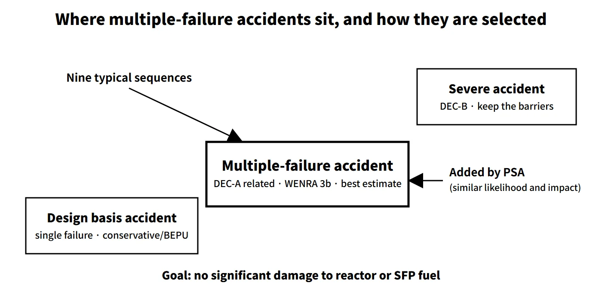

Accidents, Safety Analysis & Severe Accidents · C-SA-017
Multiple-Failure Accidents — Loss of a Safety Function Beyond a Single Failure, Typical Sequences and DEC-A
When two or more components fail and a safety function is lost: typical sequences and how significant fuel damage is shown to be prevented.
A multiple failure is the loss of the capability to perform a safety function because failures occur in two or more components, exceeding a single failure. Accidents caused by multiple failures are analysed to show that significant fuel damage — in the reactor and in the spent fuel pool — is prevented, both for a set of typical sequences and for additional sequences identified by probabilistic safety assessment (PSA).
In the international framework they correspond to design extension conditions without core damage (DEC-A), level 3b of defence in depth.
Principle and mechanism
How it differs from a single failure
A single failure is "a failure in which one component loses its capability to perform its intended safety function", and it includes any failures that follow as a consequence of it. Design basis accident analysis adds the worst single failure to the initiating event and checks that the safety systems cope.
A multiple failure goes beyond that assumption: a safety function or a pressure boundary is lost. There are three causes:
- two or more independent failures coinciding;
- common-cause failure (CCF): the same design, manufacturing or maintenance defect disabling redundant trains at once;
- simultaneous loss from an external hazard beyond the design basis (usually treated as a separate category).
Meeting the single-failure criterion does not guarantee tolerance of CCF. That is why coping with multiple failures relies mainly on diverse equipment (a diverse protection system DPS, an alternate AC diesel generator, mobile equipment) together with procedures and operator actions.
Nine typical multiple-failure accidents — what is lost in each
| No. | Accident | Function or boundary lost or damaged |
|---|---|---|
| ① | Anticipated transient without scram (ATWS) | Reactor trip (control rod insertion) |
| ② | Station blackout (SBO) | Off-site power + emergency diesels |
| ③ | Multiple steam generator tube rupture | Primary/secondary pressure boundary |
| ④ | Total loss of feedwater | Main and auxiliary feedwater |
| ⑤ | Interfacing-systems LOCA (ISLOCA) | High/low-pressure interface boundary (containment bypass) |
| ⑥ | Loss of shutdown cooling | Decay-heat removal during shutdown |
| ⑦ | Loss of ultimate heat sink | Seawater heat removal along the normal path |
| ⑧ | Small LOCA + loss of safety injection or recirculation | Coolant inventory make-up |
| ⑨ | Loss of spent fuel pool cooling | Pool cooling |
![Cutaway plant sketch with numbered pins 1 to 9 marking the reactor building, steam generators, pumps, diesel generator, spent fuel pool and seawater intake, flanked by nine cards: ATWS handled by the diverse protection system with RCS peak pressure kept below its limit; SBO with an alternate AC diesel credited within 10 minutes under RG 1.155; multiple SG tube rupture cooled down to shutdown cooling entry; total loss of feedwater handled by feed and bleed; ISLOCA prevented by design; loss of shutdown cooling judged by time to uncovery against detection and action time; loss of ultimate heat sink with hot shutdown maintained; small LOCA plus loss of safety injection; and loss of spent fuel pool cooling with a long margin before the racks uncover](../../assets/images/concepts/c-sa-017-multiple-failure-accidents/fig1-nine-scenarios-map.webp)
Additional sequences — selected by PSA
A fixed list is not enough on its own. Sequences "assessed, through probabilistic safety assessment and the like, as having a likelihood and consequences similar to" the listed accidents are also considered. No fixed frequency cut-off is set: the unit-specific PSA is searched for multiple-failure sequences that contribute strongly to core damage frequency, and these are compared with the listed accidents.
The example DEC-A list in the WENRA Issue F guidance (2014) shows why this selection matters. ATWS, long-term SBO, total loss of feedwater, LOCA + loss of one emergency core cooling function, loss of core cooling in residual-heat-removal mode, long-term loss of pool cooling, multiple SG tube rupture and loss of the ultimate heat sink overlap with the nine accidents above. On the other hand, uncontrolled boron dilution, total loss of the component cooling water system and long-term loss of safety systems after a DBA are WENRA examples that are not among the nine, so they are natural candidates for a PSA-based additional review. Conversely, ISLOCA is in the list above but is not among the WENRA examples.
What it means in a plant
Acceptance criterion — the prevention stage
The goal for multiple-failure accidents is that significant damage to the fuel in the reactor or in the spent fuel storage facility does not occur. This is the purpose of the severe accident prevention stage, achieved by securing accident management equipment, strategies and implementation arrangements.
The goal is stated as "no significant damage"; it is not tied to a single numerical limit such as the DBA peak cladding temperature criterion.
How the analysis differs
The WENRA guidance summarizes the difference between DBA and DEC as follows:
- DBA: conservative assumptions or BEPU, plus additional assumptions such as a single failure;
- DEC: best-estimate analysis (with or without uncertainty) is allowed and in some cases preferred, no systematic additional assumptions such as a single failure, and more realistic acceptance criteria.
Allowing best-estimate analysis does not mean abandoning all conservatism. Looking at uncertainty as well is recommended so that the results are meaningful for planning.
IAEA SSR-2/1 Rev.1, Requirement 20, also requires that DECs be derived from engineering judgement and deterministic and probabilistic assessment, and that equipment for DECs be independent of design basis equipment as far as practicable. The IAEA requirements, however, do not use the labels "DEC-A/B"; they speak of "conditions without significant fuel degradation" and "conditions with core melting".
![Three rows showing sequence, key challenge and mitigating means: SBO, loss of all AC, alternate AC diesel credited if available within 10 minutes under RG 1.155; loss of shutdown cooling at mid-loop, fast boil-off, early detection and restoration or injection; loss of spent fuel pool cooling, slow heat-up and boil-off, make-up with a long time margin; below, a table comparing design basis accidents and multiple-failure accidents by failures assumed, analysis method, acceptance criteria, credited equipment and procedures](../../assets/images/concepts/c-sa-017-multiple-failure-accidents/fig2-grace-time-method.webp)
Sequence → key challenge → mitigating means
| Accident | Key challenge | Mitigating means |
|---|---|---|
| ATWS | Reactivity control without rod insertion; RCS pressure peak | Diverse protection system (DPS) |
| SBO | All AC power lost | Alternate AC DG — for example, US RG 1.155 credits an AAC source that is available within 10 minutes |
| Multiple SG tube rupture | Primary/secondary boundary breached; bypass release | Isolate the faulted SGs, cool down and depressurize to shutdown cooling entry conditions |
| Total loss of feedwater | Secondary heat sink lost | RCP trip, RCS depressurization + feed & bleed through the safety depressurization system |
| ISLOCA | Containment bypass | Design against occurrence: overpressure relief of connected piping, main control room indication and alarms, isolation-valve leak tests |
| Loss of shutdown cooling | Fast boil-off at reduced inventory (mid-loop) | Early detection; restore cooling or inject before uncovery |
| Loss of ultimate heat sink | Normal heat removal path to the sea lost | SG feed and steam release from alternate water sources; hold hot shutdown |
| SBLOCA + loss of safety injection | Coolant inventory make-up | RCP trip, manual opening of the main steam atmospheric dump valves, shutdown cooling operation |
| Loss of pool cooling | Pool heat-up and boil-off | Make-up from alternate sources; the time margin to top-of-rack uncovery is long |
The strategies are reflected in the abnormal operating procedures and the emergency operating procedures. Actual time margins are unit- and condition-specific. Not all of the time to uncovery is available for action; the question is whether margin remains after subtracting detection and decision time.
Regulatory and design criteria
| Basis | Key point |
|---|---|
| IAEA SSR-2/1 Rev.1 (2016), Requirement 20 | Derivation of design extension conditions and independence of equipment |
| WENRA RL Issue F (2014) and the 2013 report on new NPP designs | DEC A/B categories, 3a/3b split, analysis methods |
For example, the United States has no "multiple-failure accident" grouping; it regulates the cases individually in 10 CFR 50.62 (ATWS), 50.63 (SBO) and 50.155 (mitigation of beyond-design-basis events).
Easily confused pairs
| Design basis accident (DBA) | Multiple-failure accident | Severe accident | |
|---|---|---|---|
| Failure assumption | Initiating event + single failure | Loss of function from two or more components or CCF | Significant core damage |
| International category | DBA, level 3 (3a) | DEC-A, 3b (WENRA) | DEC-B, level 4 |
| Analysis | Conservative or BEPU | Best estimate, realistic | Best estimate |
| Goal | Design limits, ECCS criteria | Prevent significant fuel damage | Keep the containment barrier |
| Implementing document | EOP | Abnormal and emergency operating procedures | SAMG |
Three common mix-ups: hydrogen explosion and MCCI are threats after significant core damage, not multiple-failure accidents. The typical item is "small LOCA + loss of safety injection or recirculation", not "large LOCA". And it is "multiple tube rupture", not a single SGTR — and the spent fuel pool cooling item must not be left out.
Key points at a glance
- Definition: loss of the capability to perform a safety function through failures of two or more components, exceeding a single failure.
- Position: within the scope of accident management; related to DEC-A, defence-in-depth level 3b (WENRA).
- Causes: coinciding independent failures, common-cause failure → coped with by diverse equipment.
- Nine typical sequences: ATWS, SBO, multiple SG tube rupture, total loss of feedwater, ISLOCA, loss of shutdown cooling, loss of ultimate heat sink, SBLOCA + loss of SI or recirculation, loss of SFP cooling.
- Additional: sequences assessed by PSA as having likelihood and consequences similar to the listed ones (WENRA examples such as boron dilution and total loss of component cooling water).
- Acceptance: no significant damage to fuel in the reactor or SFP.
- Analysis: best estimate, realistic assumptions, no additional single failure.
- Implementation: abnormal and emergency operating procedures; DPS, AAC-DG, feed & bleed.
- Time margin: unit-specific; what counts is the margin left after detection and decision time (AAC credited within 10 minutes under US RG 1.155).
